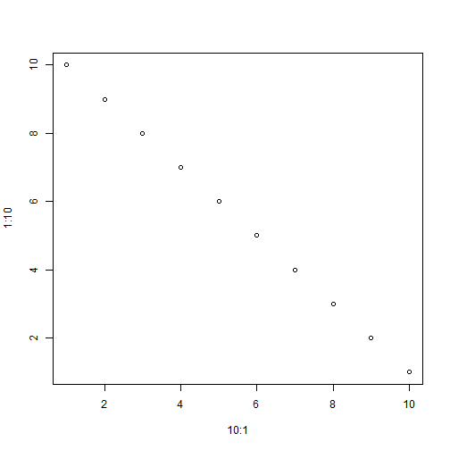

- Edit YAML front matter
- Write using R Markdown
- Use an empty line followed by three dashes to separate slides!
Jose Padarian and Sebastian Campbell
plot(10:1, 1:10)

How much is 2+2?
Try decomposing 2 + 2 into 1 + 1 + 1 + 1.
Explanation: since 2 + 2 is 1 + 1 + 1 + 1, 2 + 2 is also 4*1, and, since any number times one is the number itself, the answer is 4.